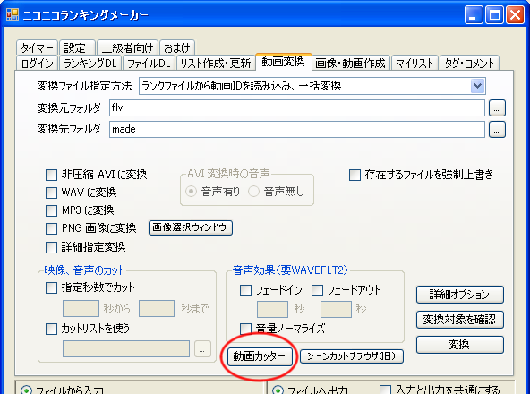
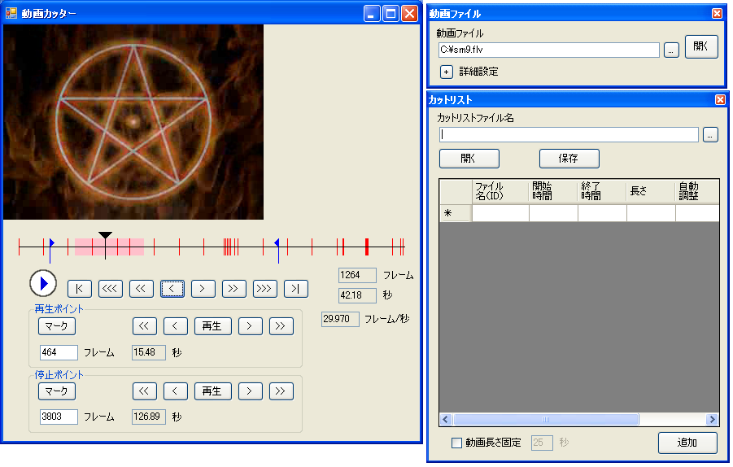
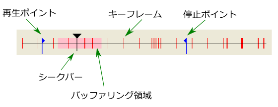
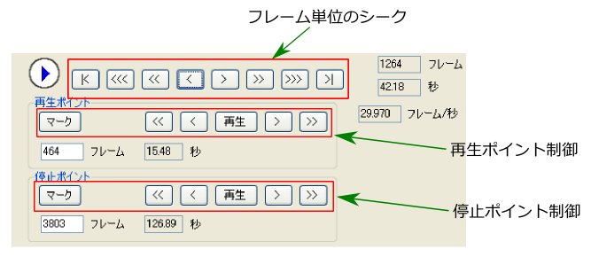
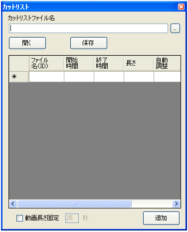
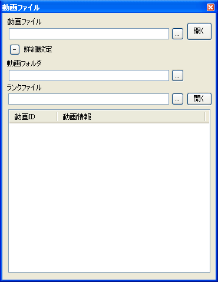

「動画変換」タブの「動画カッター」ボタンから起動できます。


メインウィンドウに動画ファイルをドラッグ＆ドロップするか、 右上の「動画ファイルウィンドウ」でファイルを選択して開くボタンを押せば開くことができます。
メインウィンドウの左中央にある再生ボタンを押すと動画が再生されます。

現在再生している地点を表します。マウスでドラッグできます。 黒三角の部分をドラッグするとキーフレームの部分だけを移動することができます。
赤の線で表されている地点はキーフレームを表します。
ピンク色の領域は画像がバッファリングされている領域を表します。 バッファリングされている部分は自由にシークできます。 バッファリングされていない部分にシークした場合は画像をデコードするために待つ必要があります。

ボタンを押すとフレーム単位でシークできます。移動量（フレーム）は 1, 10, 100, 「開始（終了）地点」です。
再生ポイントを設定します。「マーク」ボタンで再生ポイントを現在地点に設定します。 「再生」ボタンで再生ポイントから再生を開始します。「>」ボタンで再生ポイントを1フレーム右に移動させて、 その地点から再生を開始します。「>>」は5フレーム分です。
終了ポイントを設定します。終了ポイントで再生が停止します。 「マーク」ボタンで終了ポイントを現在地点に設定し、再生が停止します。 「再生」ボタンで終了ポイントの120フレーム前から再生を開始します。 「>」ボタンで終了ポイントを1フレーム右に移動させて、その地点の120フレーム前から再生を開始します。 「>>」は5フレーム分です。

カットリストのファイルパスを選択します。選択した後、 「開く」ボタンで内容がカットリスト表に表示されます。
「追加」ボタンを押すことで、現在開いている動画ファイル名（拡張子なし）、再生ポイントの時刻、 停止ポイントの時刻がカットリスト表に追加されます。
「動画長さ固定」をチェックすると停止ポイントは無視して、動画ファイル名、 再生ポイントの時刻、設定した動画長さがカットリスト表に追加されます。
「保存」ボタンでカットリスト表をファイルに保存します。 動画カッターは不安定のため、頻繁にファイルに保存することをお勧めします。

ランクファイルから動画を開くことができます。
動画が入っているフォルダ（ニコニコランキングメーカー等でダウンロード時に指定したフォルダ）を指定します。
ランクファイルのファイルパスを指定します。
表の項目をダブルクリックすることで動画フォルダ内にある動画を開くことができます。